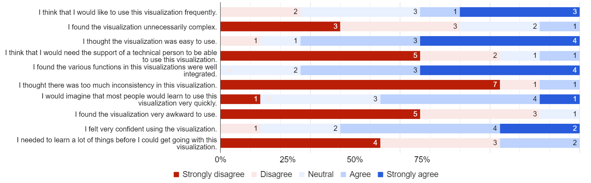
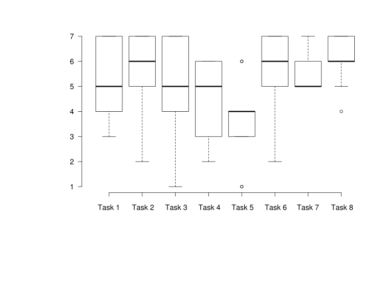

Submission #EAIT-D-23-01516
Welcome to the supplementary materials for the paper Using Data Clustering to Reveal Trainees’ Behavior in Cybersecurity Education. This website serves as an interactive signpost to the materials provided with the submission. Some of the links and references are unavailable due to the anonymization policy of the paper review process.
The implementation tied to this submission is available in a repository as an open source, under the MIT licence.
Source Code ** references hidden due to the review process
The JSON of training definition serves as the main outline of the tasks and content of a training. It includes assignments, hints, solutions, and the grading.
The generated anonymized events of individual trainees are also stored as JSONs. In this example, we show the first five events generated by a single trainee. For a full trainee event log, we provide a complete file for download.
SUS Questionnaire Data Plot
SEQ Questionnaire Data Plot
| # | Description |
|---|---|
| Task 1 | In the ‘Wrong flags per time played’ view, identify the most appropriate elbow method number in the helper elbow chart. |
| Task 2 | In the 'Wrong flags per time played' view (for all levels), do you see any suspicious trainees? Why/why not? If so, what is the trainee ID? |
| Task 3 | In the 'Wrong flags per time played' view (for level 5), what could the results imply regarding the level design? |
| Task 4 | In the 'Time spent after using the hint' view (for all levels), what does the point distribution suggest? Does it imply a good training design or bad? |
| Task 5 | In the 'Radar chart' (for all levels), are there any clusters that represent distinct strategies but share similar training success? |
| Task 6 | In the 'Radar chart' (for all levels), are there any possible outliers? |
| Task 7 | In the 'Radar chart', how variable is overall success of the trainees across the clusters? |
| Task 8 | In the dataset of 'Hacking Day Cyber Task Force Delta' (all levels), which strategy (which cluster of trainees) was the most successful? |